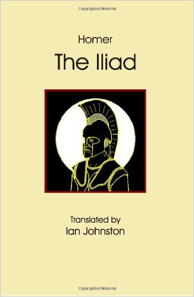
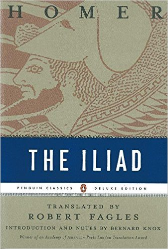
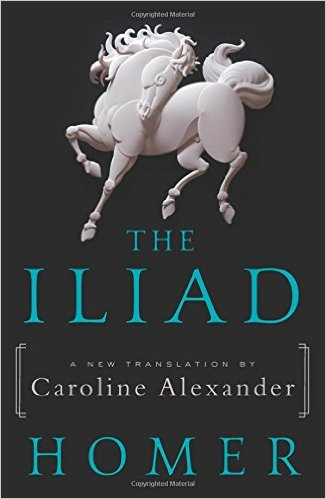
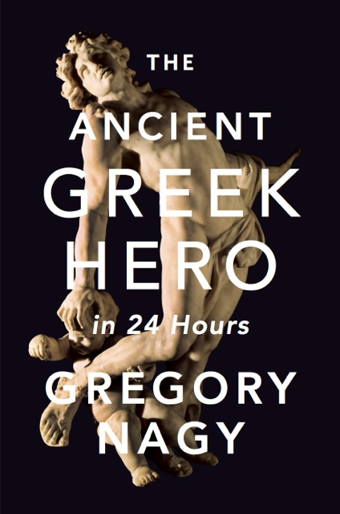

In Ian Johnson, free
The audio version by Anton Lesser is in Naxos Audiobooks.
This version is not as popular as the three in Section 2.1.1.3. I put it on top because this is the most accessible Iliad I have even read and it’s FREE. Another bonus is the high quality unabridged audiobook.
In Center For Hellenic Studies, free
The only prose translation in this list. Used in a MOOC course of 2.1.2.1.
The reviser Gregory Nagy said this revised translation aims to be as honest as possible to the original Greek text.

In Amazon. This is arguably the best translation in the market considering the tradeoff of rigorousness and readability. It’s also the only print version I hold.
The corresponding audiobook is abridged, unfortunately. This is the only drawback I think of using this version (not the version itself).
The other two strong competitive translations are Richmond Lattimore and Robert Fitzgerald. These two versions both have nice unabridged audiobooks.

In Amazon.
There are dozens of modern translations of Iliad and the reason I single this new translation out is solely because, this is the very first female translation of Homer around the world! Currently I only read a fraction of her translation from one of her books, The War That Killed Achilles.

In edX, taught by Gregory Nagy of Harvard University.
Use text in Section 2.1.1.2. The accompany book for this course is, The Ancient Greek Hero in 24 Hours by the instructor which is also free online.
Homeric Iliad
Homeric Odyssey
The Epic Cycle
Hesiodic Theogony
Hesiodic Works and Days
Herodotus’ Histories
Homeric Hymn
Alcman’s Partheneion
The Poetry of Sappho
Aeschylus’ Agamemnon
Aeschylus’ Libation Bearers
Aeschylus’ Eumenides
Sophocles’ Oedipus at Colonus
Sophocles’ Oedipus Tyrannos
Euripides’ Hippolytus
Euripides’ Bacchae
Plato’s The Apology of Socrates
Plato’s Phaedo
Pausanias
Theognis of Megara
Pindar’s Pythian
Selections from Aristotle
In edX, taught by Robert Garland of Colgate University.